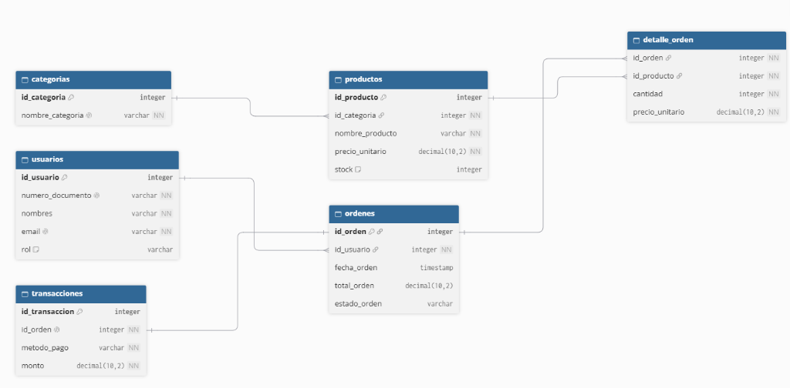

De los Diagramas al Motor Real: SQL DDL & Restricciones de Integridad
¡Hola, aprendiz! En este encuentro aprenderás cómo convertir cada cajita y relación que diseñaste en la Sesión 1 en código SQL vivo dentro de tu IDE Antigravity (Extensión Database Client) o en MySQL Workbench. Sin tecnicismos vacíos: comprenderás el porqué de cada comando para que tu base de datos proteja el negocio de TechStore Pro ante cualquier error humano.
No pienses en código aburrido: una Constraint es un candado de seguridad o regla inviolable del negocio. Es la orden estricta que le das a MySQL para que le prohíba a cualquier usuario registrar compras sin cliente, precios negativos o correos repetidos. ¡El software protege a la tienda de cualquier error humano!
El Puente: ¿Cómo se conecta con la Sesión 1?
En la clase anterior dibujaste entidades y definiste 6 relaciones de negocio (R1 a R6). Mira cómo cada concepto que hiciste a mano se convierte en una instrucción directa en SQL:
De la Abstracción Mental a la Realidad en el Disco Duro
Una entidad como USUARIO ahora es un CREATE TABLE usuarios. Una clave foránea que dibujaste como flecha ahora es una sentencia FOREIGN KEY que el motor valida cada milisegundo.
CONSTRAINT fk_...?
La palabra CONSTRAINT significa "Restricción / Regla Obligatoria", y fk_... es la placa o nombre único que le ponemos a esa regla para que MySQL la identifique.
Profundizado en Slide 06 ➔
Toca cada relación para entenderla como en la vida cotidiana:
La Regla de Oro: ¿Quiénes son los Padres y los Hijos en SQL?
En bases de datos relacionales existe un orden natural de nacimiento. Las tablas Padres deben crearse primero porque no dependen de nadie. Las tablas Hijas se crean después porque necesitan la llave de sus padres para existir. Si alteras el orden, MySQL aborta con el temido Error 1215:

categorias y usuarios
¿Por qué son padres? No tienen ninguna llave foránea (FK). Son totalmente autosuficientes. Un departamento o un cliente existen por sí solos antes de que haya productos o compras.
productos y ordenes
¿Por qué son intermedios? Nacen gracias al Nivel 1 (un producto necesita su id_categoria y una orden necesita su id_usuario). Pero a su vez, ¡ellos serán los padres del Nivel 3!
detalle_orden y transacciones
¿Por qué van al final? Tienen llaves foráneas compuestas. Si la orden y los productos no existen, el renglón de compra o el recibo bancario no tienen ningún sentido de existir.
MySQL intentó ejecutar la línea
FOREIGN KEY (id_categoria) REFERENCES categorias(id_categoria), pero al buscar en su memoria no encontró ninguna tabla llamada categorias. ¡El hijo no puede nacer porque la madre aún no ha sido creada!Solución de Oro: En tu script
.sql, coloca siempre el bloque de CREATE TABLE categorias arriba de CREATE TABLE productos.
El Vocabulario DDL: Las 4 Palabras Mágicas
DDL significa Data Definition Language. No te preocupes por el inglés: son simplemente los comandos para fabricar los "contenedores" físicos donde se guardará la información:
Como armar un estante nuevo en tu bodega. Define el nombre de la tabla y qué columnas tendrá.
Como abrirle un nuevo compartimento al estante existente (ej: añadir el campo telefono).
Destruye el estante por completo y bota toda la madera a la basura. ¡Irreversible!
Saca todos los objetos del estante y déjalo como nuevo, pero conservando la estructura de madera.
Tipos de Datos: ¿Qué cajón le corresponde a cada valor?
Elegir el tipo de dato correcto evita que tu base de datos consuma gigabytes de memoria innecesarios y previene pérdidas de dinero por redondeos incorrectos:
DECIMAL(12,2) vs FLOAT
Nunca uses FLOAT para precios. Los flotantes aproximan en binario y hacen que falten o sobren centavos. DECIMAL(12,2) guarda exactamente 10 dígitos enteros y 2 decimales para pesos colombianos ($14.500.000,00).
VARCHAR(N) vs TEXT
VARCHAR(60) es como una liga elástica: si un nombre mide 10 letras, solo ocupa 10 bytes en disco. Reserva TEXT exclusivamente para descripciones largas de productos donde no sabes si escribirán 3 párrafos.
ENUM('Activo', 'Inactivo')
Impide que alguien escriba por error 'activado', 'ACTIVO' o 'activoo'. Solo acepta exactamente una de las opciones predefinidas de la lista, ahorrando memoria interna.
Las 6 Restricciones (Constraints) Explicadas con Analogías
No pienses en las restricciones como código aburrido. Piensa en ellas como los guardias de control en la puerta de entrada:
En bases de datos relacionales, una Constraint es una regla legal inquebrantable. Al escribir la sentencia completa en el script, le pones una placa identificadora única a esa regla para que si algún dato intenta romperla, MySQL te diga exactamente su nombre en la consola de error:
PRIMARY KEY (PK)
Identifica de forma única e inconfundible a cada persona en el sistema. Nunca puede repetirse ni estar en blanco.
FOREIGN KEY (FK)
Demuestra que perteneces a ese lugar. Un pedido no puede ingresar al sistema si no tiene la manilla de un cliente válido.
UNIQUE
Dos personas no pueden compartir el mismo número de teléfono para recibir un código de banco ni el mismo email de login.
NOT NULL
Como los campos obligatorios de un formulario: no te dejan pasar si dejas tu contraseña o tu nombre en blanco.
CHECK
Pide la cédula para certificar la edad mínima. Si el precio es menor a cero o el stock es negativo, el guardia te expulsa.
DEFAULT
Si te registras hoy y no dices cuándo lo hiciste, el sistema automáticamente te pone la fecha y hora actual.
Laboratorio: ¿Qué pasa cuando la base de datos se defiende?
Muchos aprendices entran en pánico cuando ven una línea roja en su entorno SQL (IDE Antigravity / Database Client o Workbench). ¡Pero esos errores son una victoria! Significan que tus restricciones funcionaron y evitaron un desastre en la tienda:
Error 3819: Check constraint violated
¿Qué intentó hacer alguien? Insertar un producto con precio de -10.000 COP.
¿Qué salvó el negocio? La restricción CHECK (precio > 0) impidió que regalaras productos gratis en internet.
Error 1062: Duplicate entry for key 'email'
¿Qué intentó hacer alguien? Registrar un segundo usuario con el correo que ya pertenecía a otro cliente.
¿Qué salvó el negocio? La restricción UNIQUE (email) evitó que una persona suplante la cuenta de otra.
ON DELETE: ¿El Modelo WhatsApp o el Modelo DIAN?
Cuando eliminas un dato en la vida real, a veces quieres que todo lo que dependía de él desaparezca, y otras veces la ley te lo prohíbe. Así se decide en SQL:
ON DELETE CASCADE
Cuando eliminas un chat completo en WhatsApp, ¿qué esperas que pase? Que se borren todos los audios y fotos de esa conversación.
pedidos, sus líneas en detalle_pedidos se borran automáticamente en cascada.
ON DELETE RESTRICT
Si una empresa emitió una factura electrónica legal ante la DIAN, está estrictamente prohibido eliminar al cliente de la base de datos porque la factura quedaría en el limbo.
usuario o una categoria que ya tienen compras registradas, MySQL bloquea el borrado para proteger la contabilidad.
TechStore Pro: Anatomía de las 6 Tablas del Ecosistema
Este es el esquema que ya tienes activo en tu motor MySQL (techstore_db). Hoy analizaremos a fondo la estructura DDL, tipos de datos y restricciones de cada una:
Tablas padres independientes. Almacenan los clientes/administradores (con rol ENUM y documento único) y los pasillos o categorías base de la tienda.
Tablas hijas intermedias. Los productos validan precio positivo y stock no negativo (`CHECK`). Las órdenes registran la fecha, estado y se enlazan al cliente comprador.
Tablas dependientes compuestas. detalle_orden resuelve la relación N:M guardando cada renglón del carrito, y transacciones almacena el pago bancario.
Taller en Vivo: Ejecuta tu DDL en el IDE Antigravity
¡Aprovechemos lo que ya tenemos listo! En la Sesión 1 configuraste tu IDE y la extensión Database Client conectada a XAMPP en el puerto 3306. No requieres instalar programas pesados para ejecutar el DDL y aprobar tus evidencias. Selecciona un paso para ver el procedimiento:
Paso a Paso: ¿Qué debes subir exactamente a Zajuna?
En la Sesión 1 trabajamos el diseño lógico y conceptual. En esta Sesión 2 entregas la materialización en código SQL físico. A continuación tienes las diapositivas exactas de esta presentación que te sirven de apoyo y los requisitos detallados para aprobar con A sin reprocesos:
• AA1-EV02: Diagrama Entidad-Relación (DER) conceptual exportado en PDF o PNG.
• AA2-EV02: Documento de restricciones, llaves y políticas de borrado (ZIP o PDF).
• AA2-EV03: Script físico ejecutable
.sql de tu propio proyecto (ZIP).
El script
techstore_db_completo.sql que trabajamos en clase es la plantilla didáctica oficial del instructor para guiarte en el estándar técnico. Para la evidencia AA2-EV03 debes construir el script SQL con las tablas, llaves y restricciones de tu propio proyecto formativo (el sistema que estás desarrollando en tu equipo o individualmente). Si tu proyecto formativo aún no tiene tablas definidas, utiliza la estructura de TechStore Pro como estándar mínimo requerido (mínimo 6 tablas relacionales normalizadas).
AA2-EV01: Taller DDL y DML de SQL
- 1. Portada SENA: Nombre, Ficha 3389010 e Instructor.
- 2. Preguntas Teóricas: Diferencia entre sentencias DDL (estructuras) y DML (datos). Justifica por qué las tablas maestras se crean primero (Slide 03).
- 3. Cuatro Capturas de tu IDE (realizadas en el Slide 10):
- Captura de las 6 tablas creadas en Database Client.
- Captura de la Consulta 4.1 (Catálogo con JOIN).
- Captura de la Consulta 4.2 (Multi-Join 4 tablas).
- Captura de la Prueba 4.3 (Error 3819 CHECK).
- 4. Conclusión: Qué aprendiste sobre integridad referencial.
AA2_EV01_Nombre_Apellido.pdf
AA2-EV02: Restricciones de la BD
- 1. Justificación de Llaves Primarias: Por qué cada entidad cuenta con un identificador entero autoincrementable.
- 2. Políticas de Borrado (FK): Justifica por qué usamos
CASCADEen los renglones de pedidos yRESTRICTen clientes/categorías (basado en el Slide 08). - 3. Restricciones de Campo: Explicación de los
UNIQUE(email, documento, SKU) y delCHECK (precio > 0.00). - 4. Diagrama EER Físico: Imagen o PDF del diagrama relacional generado con Database Client, Workbench o dbdiagram.io.
AA2_EV02_Nombre_Apellido.zip
AA2-EV03: Script Completo Ejecutable
.sql de tu propio proyecto de software. Si usas TechStore Pro de guía, adapta los nombres de tablas y campos al negocio que estás modelando.
- El archivo debe ejecutarse 100% en verde en MySQL sin fallos de sintaxis ni de llaves foráneas.
- Debe crear las entidades de tu proyecto con sus tipos físicos y PKs.
- Debe incluir datos semilla (INSERT) y consultas de validación (SELECT con JOIN).
AA2_EV03_NombreProyecto_NombreApellido.zip
Checklist Anti-Errores: Verifica antes de enviar
Toca cada uno de los 5 requisitos para certificar que tu trabajo cumple con todos los criterios de la rúbrica del instructor:
1. El script ejecuta en verde sin detenerse ante errores de clave foránea
Creaste primero las tablas padres (roles, categorías) y de último las hijas.
2. Todas las tablas tienen PRIMARY KEY entera
Cada entidad tiene su identificador único con `AUTO_INCREMENT`.
3. Restricciones CHECK para defender la tienda
Validaste que los precios sean positivos y los stocks no sean negativos.
4. Sabes justificar cuándo usar CASCADE vs RESTRICT
Cascada en los renglones de detalle de compras y restricción en el catálogo de clientes.
5. Datos de prueba INSERT y consulta SELECT INNER JOIN
Probaste que se pueden consultar clientes, compras y productos en un solo reporte.
¡Has dominado el mundo de las Bases de Datos Relacionales!
Ya sabes diseñar modelos conceptuales (Sesión 1) y construirlos físicamente en código SQL real (Sesión 2). En la próxima clase daremos el salto al mundo NoSQL con MongoDB:
Próxima Sesión: Martes 20/10/2026 (6:30 PM)
Sesión 3 — NoSQL & MongoDB: ¿Qué pasa cuando los datos cambian constantemente? Aprenderemos sobre documentos JSON, colecciones y cuándo usar MongoDB en lugar de MySQL.
AA1-EV03Herramientas de Apoyo
Consulta el Dashboard en Vivo para verificar tus calificaciones y entra al Manual Web para repasar los comandos a tu propio ritmo: